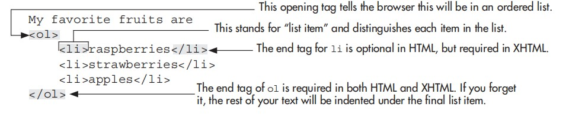
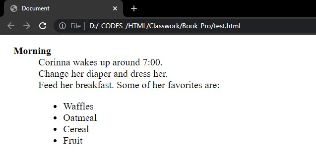

Lists are everywhere—on your refrigerator, in schoolbooks, next to the telephone, on bills, and in all sorts of other documents. That’s why there’s a special set of tags just for creating lists. This chapter focuses on the three different types of lists possible in HTML:
Lists are especially useful in web pages to draw attention to short pieces of information. Keep that in mind when you create your lists, and try to include short phrases, instead of long sentences, in each list item.
An ordered list is one in which each item is preceded by a number or letter. For example: My favorite fruits are
If you want to create the previous list on a web page, you should use an ordered list. Here’s what the HTML code would look like:

NOTE:
While it’s not required, indent the list items to make seeing the structure of the list
easier.
Notice any number is not included in my list. This is because I used the ol tag to tell the browser this is an ordered list. When browsers see ordered lists, they know to place a number in front of each list item.
The default type of ordered list uses Arabic numbers, but you can use the type attribute
to change that. Table 8-1 identifies the different types of ordered lists you can create with the
type attribute.
To change the type of ordered list, add the type attribute and its value to the opening ol tag.
<ol type="I">
<li>Introduction</li>
<li>Understanding the Medium</li>
<li>Basic Page Structure</li>
</ol>
| Type Attribute Value | Numbering Style | Example |
|---|---|---|
| 1 | Numbers | 1,2,3,… |
| a | Lowercase alphabet | a,b,c,… |
| A | Uppercase alphabet | A,B,C,… |
| i | Lowercase Roman numerals | i,ii,iii,… |
| I | Uppercase Roman numerals | I, II, III,… |
NOTE:
The type and start attributes are deprecated by the W3C, which prefers that you
use style sheets to customize the look of your lists, but they are still widely supported by
the browsers. Using style sheets to style lists is discussed later in this chapter.
Here, I changed the type to “I”, which tells the browser to place uppercase Roman numerals in front of each list item. So the previous code would create a list like the following:
You can also specify the starting number or letter for an ordered list with the start attribute. The default for the starting number is 1. To change this, add the start attribute to your ol tag.
<ol type="a" start="3">
<li>Color</li>
<li>Working with Text</li>
<li>Working with Links</li>
</ol>
Even though the value of the type attribute may be something other than Arabic numerals, the value of the start attribute is always an integer. So, in the previous example, start="3" actually tells the browser to start the list with the third letter because type="a".
If you want to change an individual value—for example, if you want to make the third item in the list use the letter g—you can add the value attribute to the specific li tag.
<ol type="a" start="3">
<li>Color</li>
<li>Working with Text</li>
<li value="7">Working with Links</li>
</ol>
As with the start attribute, the value attribute is always an integer. The browser looks at the value of the third list item and changes it to g because the type is a.
The second type of list is similar to the first, except unordered lists don’t use numbers or letters. As the name suggests, unordered lists don’t rely on order for importance. These lists use bullets to precede each list item. The following is an example of an unordered list:
You still use the li tag to identify each item in the list, but instead of beginning with the ol tag, unordered lists begin with the ul tag.
<ul>
<li>red</li>
<li>green</li>
<li>blue</li>
</ul>
Aside from that, the code used to create the first two types of lists is almost identical. In fact, you can even use the type attribute here to change the style of the bullets. Three possible options exist for bullet style:
● disc Usually displayed as a small, filled-in circle
● circle Usually displayed as an open circle
● square Usually displayed as an open (Mac) or filled-in (Windows) square
Initially, all unordered lists default to the disc style, which is usually represented as a small, filled-in circle. However, if you nest unordered lists—that is, if you include an unordered list in another unordered list—the default value changes.
The third type of list you can create in HTML is called a definition list. As its name suggests, you might use a definition list to show terms and their definitions. For example, in the following list, the term is listed on the first line, and then the definition is on the line below the term.
A definition list works just like this one, where you use HTML tags to identify the terms
and definitions for each of the list items.
The code to create the page shown in the preceding illustration looks like this:
<dl>
<dt>W3C</dt>
<dd>The World Wide Web Consortium was created in 1994 to develop
standards and protocols for the World Wide Web.</dd>
<dt>HTML</dt>
<dd>Hypertext Markup Language is the authoring language used to
create documents for the World Wide Web.</dd>
</dl>
You can use more than one dd for each dt if you need to; the browser will just simply indent each line below the dt.
NOTE:
Although it can be quite useful to use the dd tag outside a definition list as a way
to indent text, this isn’t valid HTML, and it can produce unpredictable results in
some browsers. Because indenting text with the dd tag does the same thing as the
blockquote tag, you might as well use that tag to indent a block of text.
You can also use another list inside itself or even one type of list inside another type of list. Each time you use a list inside another list, you are nesting lists. Perhaps the best example for nested lists is an outline like those created for a term paper.
Can you imagine what the HTML code would look like for the preceding outline? The best solution would be to use a series of nested ordered lists as shown in the following illustration and code.
<ol type="I">
<li>Introduction</li>
<li>Part I
<ol type="A">
<li>Description</li>
<li>Examples
<ol type="1">
<li>Reference One</li>
<li>Reference Two</li>
</ol>
</li>
</ol>
</li>
<li>Part 2</li>
<li>Summary</li>
</ol>
As I mentioned before, you can also nest one type of list inside another type. For example, you could include a bulleted list inside a definition list to give further clarification to a definition description. Look at the following illustration and code to see what I mean.
<dl>
<dt><b>Morning</b></dt>
<dd>Corinna wakes up around 7:00.</dd>
<dd>Change her diaper and dress her.</dd>
<dd>Feed her breakfast. Some of her favorites are:
<ul>
<li>Waffles</li>
<li>Oatmeal</li>
<li>Cereal</li>
<li>Fruit</li>
</ul>
</dd>
</dl>

TIP
The most important thing to remember when nesting lists is always to confirm that you
have closed each list. If you notice a section of your nested list is indented more than it
should be or continues within the list above it, try drawing semicircles from each of the
list’s opening and closing tags. If any of the circles cross or don’t have an ending spot,
you may need to recheck your work for errors.